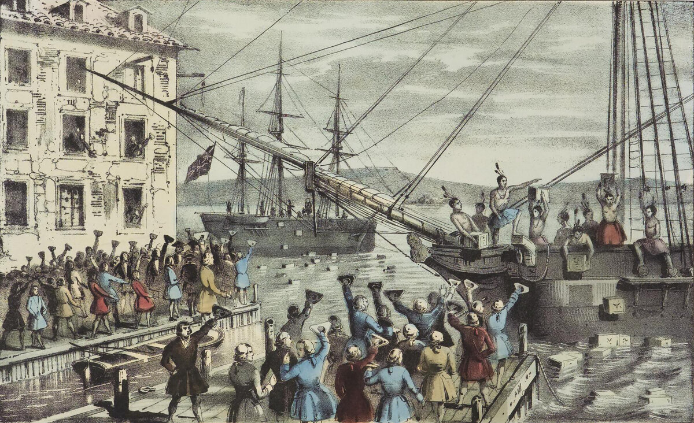

A2 · American History
The Boston Tea Party
A cold December night, three ships, and ninety thousand pounds of tea in the water.
Play the audio and follow along, then read it again on your own. Tap or hover over a highlighted word to see what it means.
On the night of 16 December 1773, about a hundred men walked down to the harbor in Boston. It was cold and dark, and they were going to destroy a very large amount of tea.
The problem had started years before. Britain needed money after a long war, so it put taxes on things the American colonists bought.
The colonists did not like paying taxes to a parliament in London, because they had nobody there to speak for them. They stopped buying British goods, and Britain removed most of the taxes.
But one tax stayed: the tax on tea. For London it was a small tax. For the colonists it was a question of principle.
In 1773 a new law gave one British company, the East India Company, the right to sell tea in America more cheaply than anybody else. Many colonists saw a trap. If they bought the cheap tea, they accepted the tax.
Three ships with tea arrived in Boston. The colonists asked the governor to send the ships back to England. He said no.
So the men went down to the harbor. Some of them had put blankets around their shoulders and paint on their faces, because they did not want anybody to recognize them.

They worked for about three hours. They opened 342 big boxes of tea and threw everything into the water. They broke nothing else, and they hurt nobody.
In the morning, tea was floating all over the harbor. People say the water smelled of tea for days.
Britain was furious. Parliament closed the port of Boston and sent soldiers. Instead of ending the protest, this brought the thirteen colonies together, and eighteen months later the war began.
Key Vocabulary
- a harbor a place where ships stop next to a city (American spelling: harbor)
- to destroy to damage something completely
- goods things that people buy and sell
- a principle a strong idea about what is right
- a trap a clever plan to catch somebody
- a governor the person who governs a colony or a state
- to recognize to know who somebody is when you see them
- to float to stay on the top of water
- furious extremely angry
- a port a city or place where ships load and unload
The Boston Tea Party — A2 · American History · Renan the Teacher, English Language Academy · https://renangrossi.github.io/englishclasses/reading/a2/boston-tea-party.html
Interactive Exercises
Practice
Complete each exercise, then click Submit to see your score and an explanation for every answer.
Speaking & Writing
Discussion
There are no right answers here — use these to practice speaking, or write a short answer to each.
- Was destroying the tea a good way to protest? What else could the colonists have done?
- Have you ever stopped buying something because you did not agree with a company or a government?
- Britain punished the whole city of Boston. Why can punishing a group make a problem bigger?